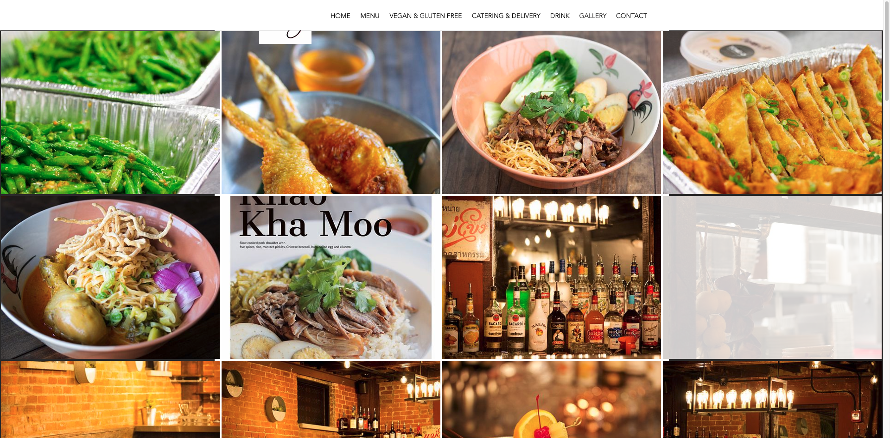
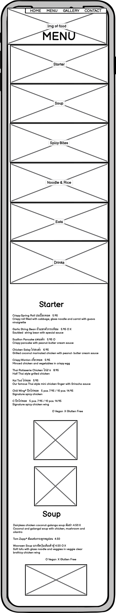
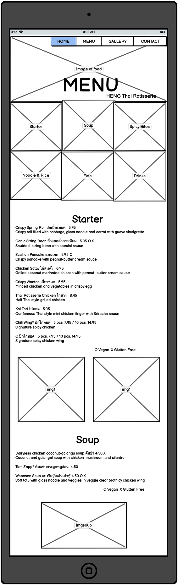
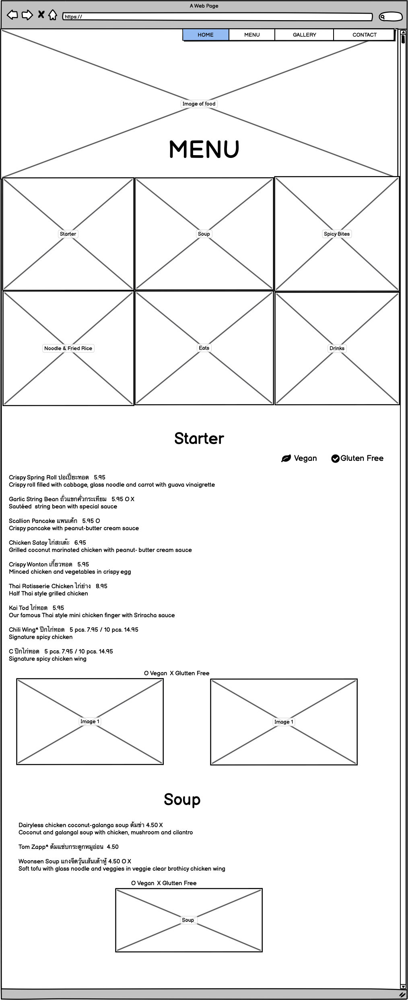
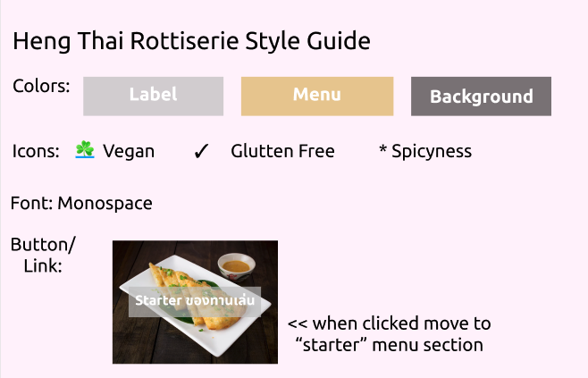

Writeup
Website : Heng Thai Rottisserie
Re-designed Website : My Heng Thai Rottisserie

Problem
- Above are the screenshots of the original Heng Thai website (menu, drinks, and gallary pages)
- Menu is divided into three different pages/sections: menu, vegan & Glutten Free, Drink. All three pages have different format. Regular menu page has a list of its menus while the other two pages just have images
- Vegan & Glutten Free menu page is especially confusing. Viewer has to go back and forth between the menu page and vegan/glutten free page
- Food pictures in gallary lack explanation/label. It is hard to know which food item the picture is
- The website is not accomodating to people with visual problem (elaborated more in the Accessibility Issues section below)
- Issues with image size in vegan/glutten free page and drinks page (elaborated more in Accessibility Issues section below)
Accessibility Issues
- WAIVE indicated that this website's MENU page has 90 contrast errors marked as "Very low contrast". This website is not very accomodating for people with visual impairement or color-blindness.
- WAIVE also showed 8 alerts on "confusing heading" and "very small text" which is also a limiting factor to people with visual problem
- The website also had areas that cannot be read by screenreaders
- In the "glutten free and vegan" and "drinks" page the images are too small for some people to read off of it comfortably. It also lacks a feature that expands the image upon clicking.
Low-fidelity Prototypes
Below are my high-fidelity prototypes in the order of phone, ipad, and desktop.
- As mentioned above, this website is not friendly to people with visual problems; low color contrast, small text ,...etc
- The website is also pretty hard to navigate because it split the menu into three different sections. To fix this problem, I combined the menu, vegan/glutten free, gallery, and drink pages in to one.
- I added vegan/glutten free label to the menu items directly so that the viewers don't have to go to vegan/glutten free page to check if the menu is vegan/glutten free.
- I also added images of certain menu items right underneath its menu section with the label so that the viewers don't have to go to the gallery page to check out the images. This also makes it easier for the viewers to identify what the image is actually showing. (the original website lacked label)
- I made the images to vertically stack in phone wireframe so that the images don't become too small
- The vegan/glutten free labels are shown better in hi-fi prototypes and in the website. I added an icon depicting vegan or glutten free menu next to the dishes that apply
- I also made the nav-bar more concise. Now it only has 3 elements: menu, home, contact. (low-fi prototype has gallary page in the nav-bar but as I later decided to remove it thinking that it was a bit redundant.)



StyleGuide

High-fidelity Prototypes
Below are my high-fidelity prototypes in the order of phone, ipad, and desktop.
- As you can see in the below prototypes, when the screen width goes below 600 px (most phones) the website re-organizes its images to stack up. This can be done by using flexbox. (this function is outlined in the css file)
- Also, if the screen width goes below 600px, the website will automatically adjust its font to be smaller (this function is outlined in the css file)
- When the user clicks on one of the 6 imgaes in the beginning, the website should take you to the corresponding menu section. (using href)
- Since my website has a lot of contents, the prototype came out to be very long.
- Since the original website had multiple problems with low color contrast, I tried to solve this problem by having white letters on dark gray background. (instead of having an image like the original website)
- All images will have labels (the label's size and location will be adjusted with the image once the screen size changes)
Responsive Redesigning
- I ran WAIVE again for the redesigned website. The redesigned website removed all the low-contrast alerts, making it more accessible for people with different vision limitations
- I did get more alerts on "redundant or alternative texts" but these factors shouldn't affect the accessibility too much
- The redesigned website now has 0 Aria warning compared to the old website that used to have 31
- The redeisgned website also has less structural element warnings (old website used to have 33, the new one has 7)
- I also tried WAIVE on different screen sizes (ipad and iphone5). The WAIVE score was pretty consistent on different screen sizes.
- I also got an error saying "Language Missing or Invalid". I think I am getting this error because I have some Thai in my website.
- The website looks pretty much the same on desktop and ipad screen sizes. It will only adjust when the width goes below 600px.
- When you put your phone into a landscape mode, the layout becomes similar to that of ipad. (the images wouldn't stack up)